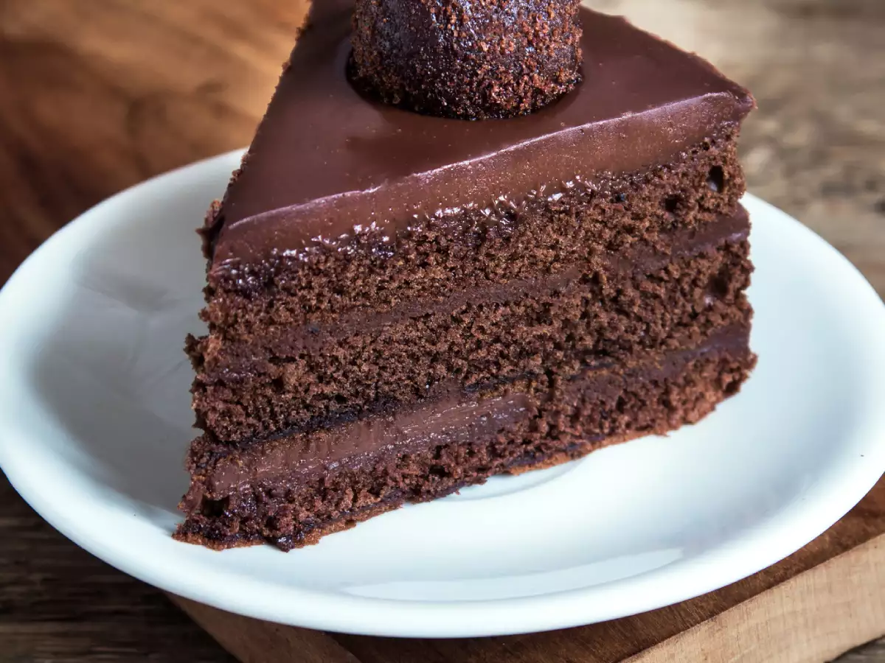

|

|
- ChacolateCake ingredients:
-
- all-purpose flour
- sugar
- unsweetened cocoa powder
- baking powder
- baking soda
- salt
- espresso powder – I give more information on the espresso powder below
- milk – you can also use buttermilk, almond milk, oat milk, or coconut milk
- oil – you can use vegetable, canola or melted coconut oil
- eggs – when baking, I like to use room temperature eggs
- vanilla extract
- boiling water
|